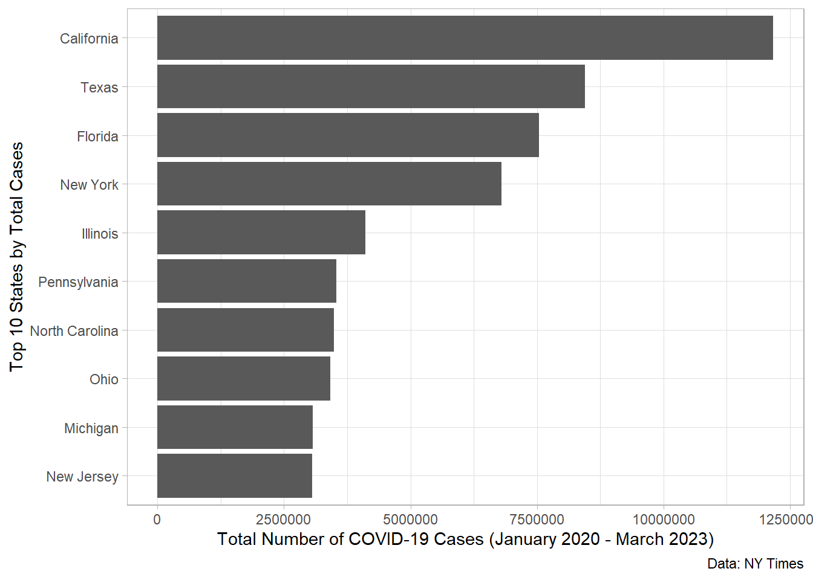
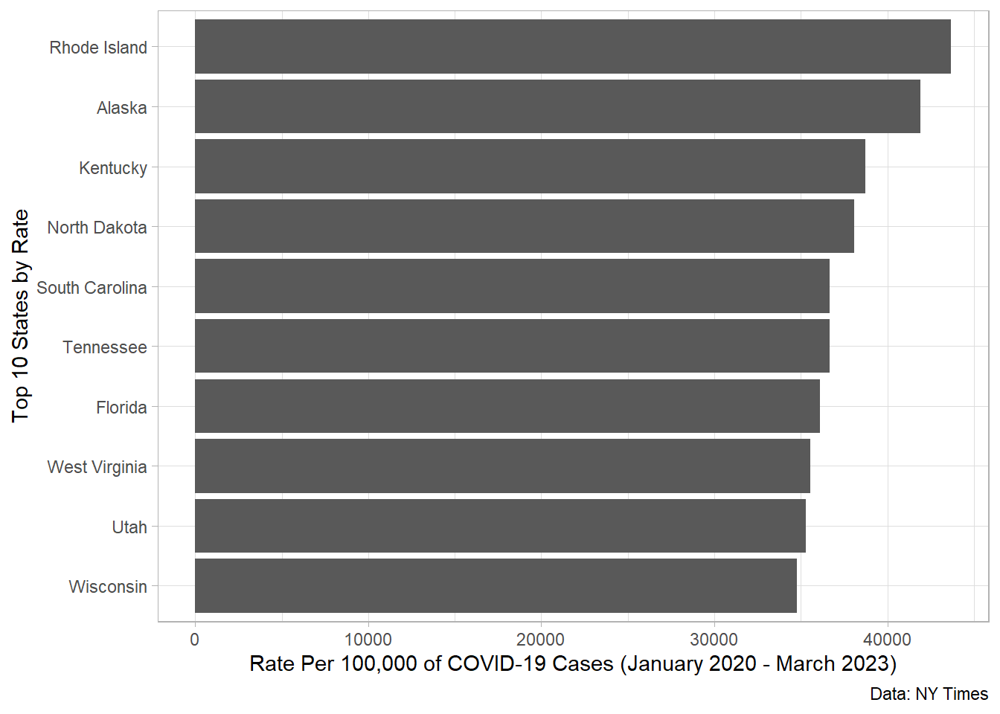

Error:
! 'covid_cases_us.csv' does not exist in current working directory:
'C:/Users/cann4817/Desktop/spring-2026/group-activities/week-10'.PA 9: COVID-19 Infections and Impact on States
This task is complex. It requires many different types of abilities. Everyone will be good at some of these abilities but nobody will be good at all of them. In order to solve this puzzle, you will need to use the skills of each member of your group.
Groupwork Protocols
During the Practice Activity, you and your partner will alternate between two roles—Computer and Coder.
When you are the Computer, you will type into the Quarto document in RStudio. However, you do not type your own ideas. Instead, you type what the Coder tells you to type. You are permitted to ask the Coder clarifying questions, and, if both of you have a question, you are permitted to ask the professor. You are expected to run the code provided by the Coder and, if necessary, to work with the Coder to debug the code. Once the code runs, you are expected to collaborate with the Coder to write code comments that describe the actions taken by your code.
When you are the Coder, you are responsible for reading the instructions / prompts and directing the Computer what to type in the Quarto document. You are responsible for managing the resources your group has available to you (e.g., cheatsheet, textbook). If necessary, you should work with the Computer to debug the code you specified. Once the code runs, you are expected to collaborate with the Computer to write code comments that describe the actions taken by your code.
Here are more details of the Pair Programming Protocols
Note
The partner has the most relaxing spring break plans (this is of course relative) will start as the Computer (typing and listening to instructions from the Coder).
Group Norms
Remember, your group is expected to adhere to the following norms:
- Be curious. Don’t correct.
- Be open minded.
- Ask questions rather than contribute.
- Respect each other.
- Allow each teammate to contribute to the activity through their role.
- Do not divide the work.
- No cross talk with other groups.
- Communicate with each other!
Goals for the Activity
- Use the
dplyrverbs to transform your data
- Create new data sets through the joining of data from various sources
- Use
forcatsto reorder values on a graph for easier comparison
THROUGHOUT THE Activity be sure to follow the Style Guide by doing the following:
- load the appropriate packages at the beginning of the Quarto document
- use proper spacing
- add labels to all code chunks
- comment at least once in each code chunk to describe why you made your coding decisions
- add appropriate labels to all graphic axes
Setting up your Project
Your project should have the following components:
- completed pa-9-covid-factors-activity.qmd
- rendered file as
.html datasub-folder that contains- created data
- us-pop-2019.csv
Important
The original Computer should submit the zip file for the canvas quiz. The original Coder can just submit the rendered html file.
Computer - Be sure to share the final .qmd and .html file with the original Coder.
Data Description - United States COVID-19 Cases and Deaths
Starting in January 2020, the New York Times started reporting on COVID-19 infections in the United States and eventually created a Githhub Repository of the data they used and reported on in their stories (a field called “Data Journalism”). They ended their data collection in March 2023 and switched to just using data from national reporting systems.
We will use their data to evaluate COVID-19 and how it varied across different states. Here are the NY Times data on cumulative cases by date and states (including territories).
Note that both cases and deaths are cumulative by date and we will want to observe just the unique cases per day so we can get various estimates of totals across the states.
If we want to extract the daily cases we can use the following code which will calculate the difference in (cumulative) cases for one day minus the previous day using the diff() function from base R.
Warning
Your team should create a data subfolder in your project to store the created data and to upload the population data to as well.
Now that are data is in the format we need (sort of), we will start our analysis.
Part 1: Greatest Number of Cases
First, we need to read in our clean data.
Note - there may be an error in the code below.
Which 10 US States/Territories had the most COVID-19 Cases from January 2020-March 2023
We want to identify the states with the most cases (top 10). To do this, we will need to modify our data to find the total number of cases for each state. The code below does this but it has errors!
Correct the errors and then assign the resulting data to state_totals.
Error in `groupby()`:
! could not find function "groupby"Now use the states_totals and identify the top ten states/territories with the most cases between January 2020 and March 2023. Then make a graph ordered by greatest number of cases to least number of cases (Hint: use forcats functions to help you).
Error in parse(text = input): <text>:6:0: unexpected end of input
4: ## order the states by greatest to smallest total on the graph
5: ## label, color, update as necessary to provide all relevant information
^
Canvas Quiz Question 1
Which state had the most COVID-19 cases between January 2020 and March 2023?
Other Question
Is this the best way to look at our data? Is looking at just the total number of cases the best way to compare states?
Part 2: Updating our Data Source
Hopefully you realized that there is a flaw in our comparison. Many of the states with the most cases are also some of the biggest states in terms of population size! So is there a better way to make comparisons between groups with differing group sizes at baseline? YES! Here are a few options:
- Calculate the Proportion
- Calculate the Percentage
- Calculate a Rate, such as Rate per 100,000 people
To do any of the above calculations, we would need the population sizes for each state. Here is data from the US Census Bureau on the state estimated population size in 2019.
Note - if this code does not work you did not organize your project folders correctly.
Calculate a Relative Rate for Comparison
Choose one of the above statistics to calculate to make our comparison between states/territories. Then recreate your graph from above with the new metric for case numbers.
Error in parse(text = input): <text>:8:0: unexpected end of input
6: ## order the states by greatest to smallest relative rate on the graph
7: ## label, color, update as necessary to provide all relevant information
^
Canvas Quiz Question 2
Which state had highest number of COVID-19 cases relative to population size between January 2020 and March 2023?
Other Questions
What are some possible issues with our analysis? Consider the following:
- Data sources and reliability of the data
- Time scale and impact of time
What other questions would you like to try to answer using this data? Would that require other data sources? What information would you need to answer your questions?